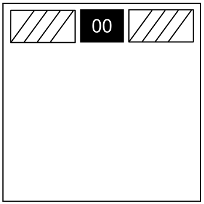

On the Subject of Injector
Profile Revealer can't save you now.
Upon activation, the needy will present a random module that you have installed. See the “Module Selection” section below for details.
- Solving the presented module will disarm the needy.
- Striking on the presented module will invoke a bomb strike but will also disarm the needy. You can only strike once per presented module.
Module Selection
- A module is a candidate for this needy if it:
- Is installed
- If it is installed but is disabled via DBML, it will be loaded through DBML if selected.
- Is a solvable module (not needy)
- Is a modded module (not vanilla)
- Is on the repo
- Has a Twitch Plays score of 5 or less
- Is not a boss or semi-boss module
- Has no quirks
- Is installed
- A random vanilla module will instead be used if:
- The needy is unable to acquire repo data
- No installed modules meet the selection criteria
- The selected module fails to load through DBML